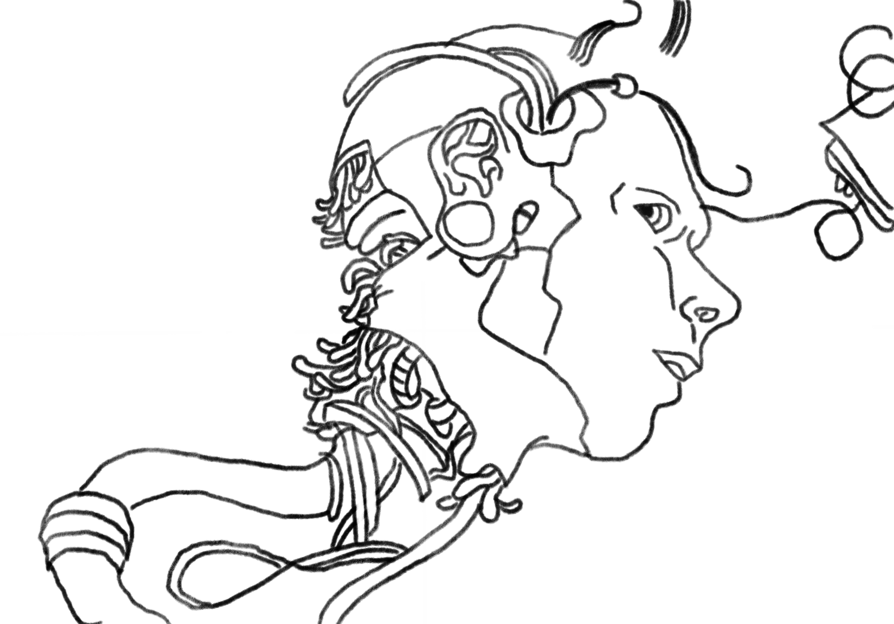

For this week's assignmnet, I did some research about what biomedical engineers do. I was quite impressed by how wide this field is, as it covers concepts from the development of medicines to genetic engineering. Especially with the pandemic going on recently, this branch of engineering has really been discoved by more and more people for its crutial role our daily life.
During my research, I read several interesting articles focusing on human brains and how some scientists have been trying to modify or add on to our brians to make us "smarter". I found it very cool but also a little concerned, or scared, about how interfering in this extremmely complicated part of our body might destroy some keys evolutions throughout human history. Insprired by this idea, I created this drawing to represent how I look forwards to seeing more new discoveries abotu our brain and how scientists should pay extra attention during research.
